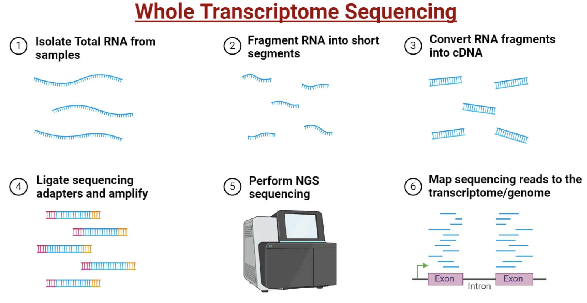
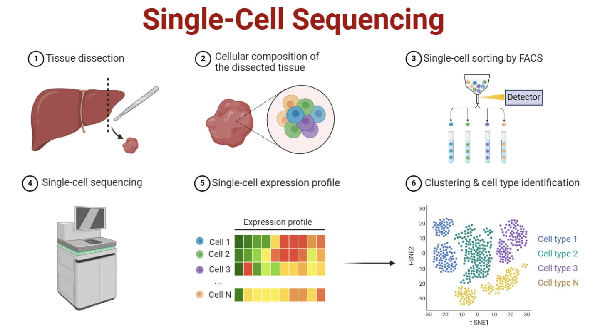
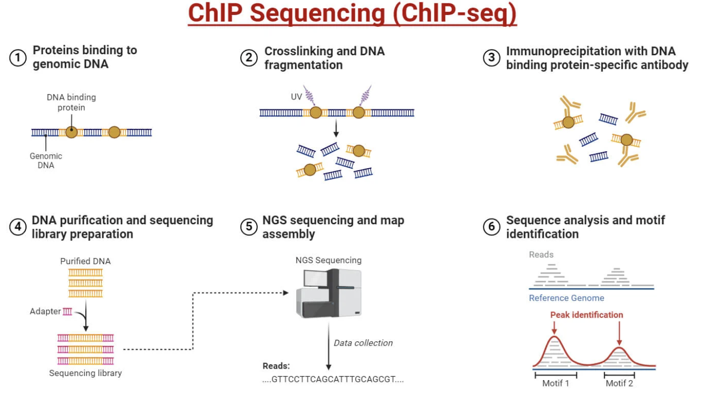
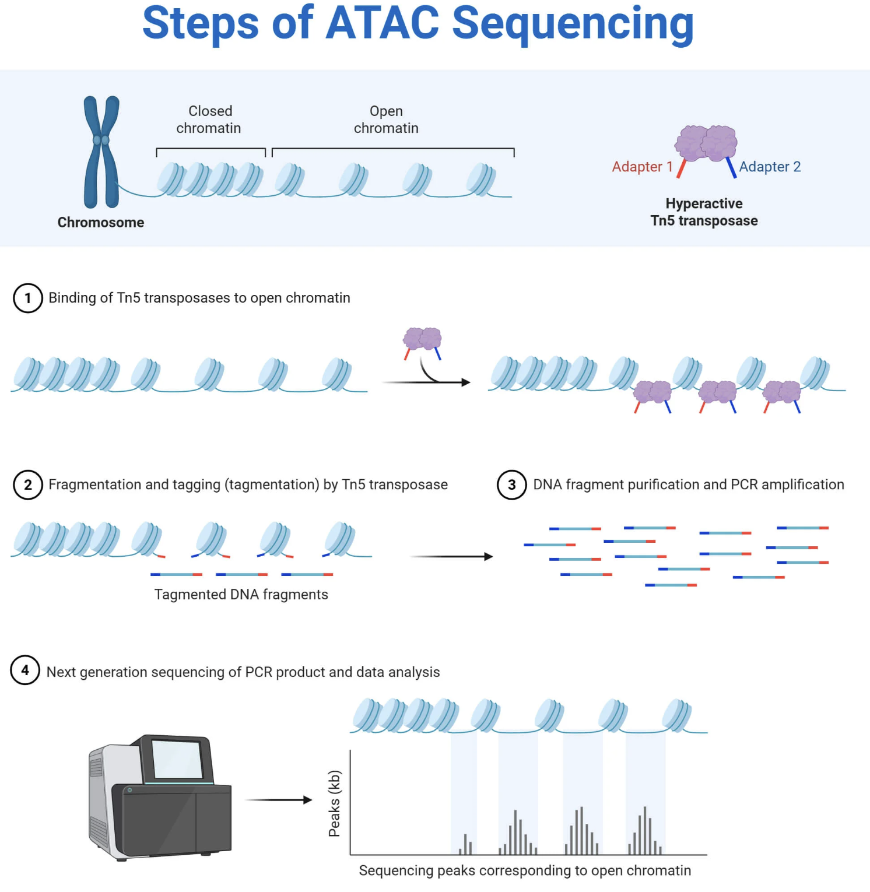
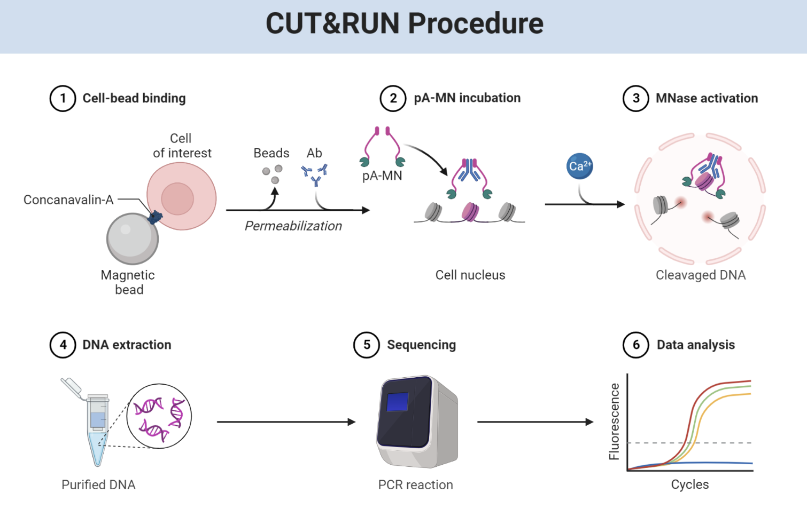

BSMS205 · Genetics
Gene Regulation
Chapter 29 · Methods and Applications
Today's central question
How do we measure
gene regulation?
Roadmap
- RNA-seq · gene expression
- Single-cell RNA-seq · cellular heterogeneity
- Histone marks · the chromatin code
- ChIP-seq · protein-DNA interactions
- ATAC-seq · open chromatin
- CUT&RUN · high resolution
- Integrated epigenomics · putting it together
§ 1
RNA-seq
RNA-seq workflow
- Extract total RNA from cells or tissue
- Reverse transcribe → cDNA · fragment
- Add adapters · sequence (50–150 bp reads)
- Align to genome · count reads per gene
- Normalise · differential expression analysis
Bulk RNA-seq · the big picture

RNA from many cells averaged together · output: counts per gene.
Source: Microbe Notes.
Normalisation · why we need it
| Method | What it corrects |
|---|
| CPM | Sequencing depth |
| FPKM / RPKM | Depth + gene length |
| TPM | Depth + length (better cross-sample) |
| DESeq2 normalisation | Depth + RNA composition for DE testing |
§ 2
Single-Cell RNA-seq
The droplet trick
- Encapsulate each cell in a tiny oil droplet
- Each droplet has a gel bead with a unique barcode
- Cell lyses in droplet · mRNA tagged with cell barcode during RT
- Pool · sequence · de-multiplex by barcode
Bulk vs single-cell

Each cell barcoded individually · output: cell × gene matrix.
Source: Microbe Notes.
What scRNA-seq reveals · cell identity
| Cell type | Marker genes |
|---|
| T cells | CD3 · CD4 · CD8 |
| B cells | CD19 · MS4A1 |
| Excitatory neurons | SLC17A7 |
| Inhibitory neurons | GAD1 |
| Astrocytes | GFAP |
| Microglia | CX3CR1 |
§ 3
The Histone Code
The chromatin code
| Mark | Meaning |
|---|
| H3K4me3 | Active promoter |
| H3K27ac | Active enhancer or promoter |
| H3K4me1 | Enhancer (active or poised) |
| H3K36me3 | Active gene body · elongation |
| H3K27me3 | Polycomb repression |
| H3K9me3 | Constitutive heterochromatin |
Combining marks · chromatin states
- Active promoter · H3K4me3 + H3K27ac
- Active enhancer · H3K4me1 + H3K27ac
- Poised enhancer · H3K4me1 (no H3K27ac)
- Polycomb-repressed · H3K27me3
- Heterochromatin · H3K9me3
§ 4
ChIP-seq
ChIP-seq protocol
- Crosslink proteins to DNA with formaldehyde
- Fragment chromatin (~200–500 bp)
- Add antibody · pull down protein-DNA complexes
- Reverse crosslinks · purify DNA · sequence
- Map reads · call peaks
The result · peak profiles

Antibody enriches DNA fragments bound by target protein → peaks at binding sites.
Source: Microbe Notes.
§ 5
ATAC-seq
ATAC-seq · the Tn5 trick
- Tn5 transposase loaded with sequencing adapters
- Cuts DNA only in accessible chromatin
- Inserts adapters in the same step (tagmentation)
- Result: open regions sequenced · closed regions invisible
ATAC-seq output

Tn5 cuts only at open chromatin · sharp peaks at accessible regulatory regions.
Source: Microbe Notes.
§ 6
CUT&RUN
CUT&RUN · targeted cleavage
- No crosslinking · no sonication
- Antibody binds target · pA-MNase fusion binds antibody
- Calcium activates MNase → cuts only at the binding site
- Tiny fragments diffuse out · sequenced
Why CUT&RUN beats ChIP-seq

Sharper peaks · lower background · 100–10,000 cells (vs millions for ChIP-seq).
Source: BioRender.
§ 7
Integrated Epigenomics
Each method · one layer
| Method | What it measures |
|---|
| RNA-seq | Gene expression |
| scRNA-seq | Single-cell expression |
| ChIP-seq | Protein-DNA binding |
| ATAC-seq | Chromatin accessibility |
| CUT&RUN | High-res protein binding |
| Hi-C | 3D contacts |
An active enhancer · multi-track signature
- ATAC-seq: open
- H3K27ac ChIP-seq: active mark
- H3K4me1 ChIP-seq: enhancer mark
- RNA-seq nearby gene: highly expressed
A repressed gene · the opposite signature
- ATAC-seq: closed
- H3K27me3 ChIP-seq: repressive mark
- H3K4me3: absent
- RNA-seq: no expression
§ 8
Why It Matters
for Genetics
Most disease variants are regulatory
- ~93% of GWAS hits are non-coding
- Often disrupt enhancer activity
- Small expression changes → real disease risk
Type 2 diabetes example
- Most T2D risk variants in pancreatic islet enhancers
- Reduce insulin gene expression by 10–20%
- Each variant: tiny effect
- ~600 variants combined → significant disease risk
Therapeutic targets
- Insufficient expression → CRISPRa (Ch. 27)
- Excess expression → CRISPRi
- Wrong epigenetic state → epigenetic editors
- Therapy follows the regulatory architecture
What to take away
- RNA-seq — gene expression genome-wide
- scRNA-seq — cell-type heterogeneity
- ChIP-seq — protein-DNA interactions
- ATAC-seq — open chromatin · fast · low input
- CUT&RUN — high resolution protein binding
- Together → complete regulatory architecture · disease interpretation · therapy design
Next lecture · the final chapter
Connecting variants to molecular phenotypes
Chapter 30 · QTLs · Connecting Alleles to Molecular Traits